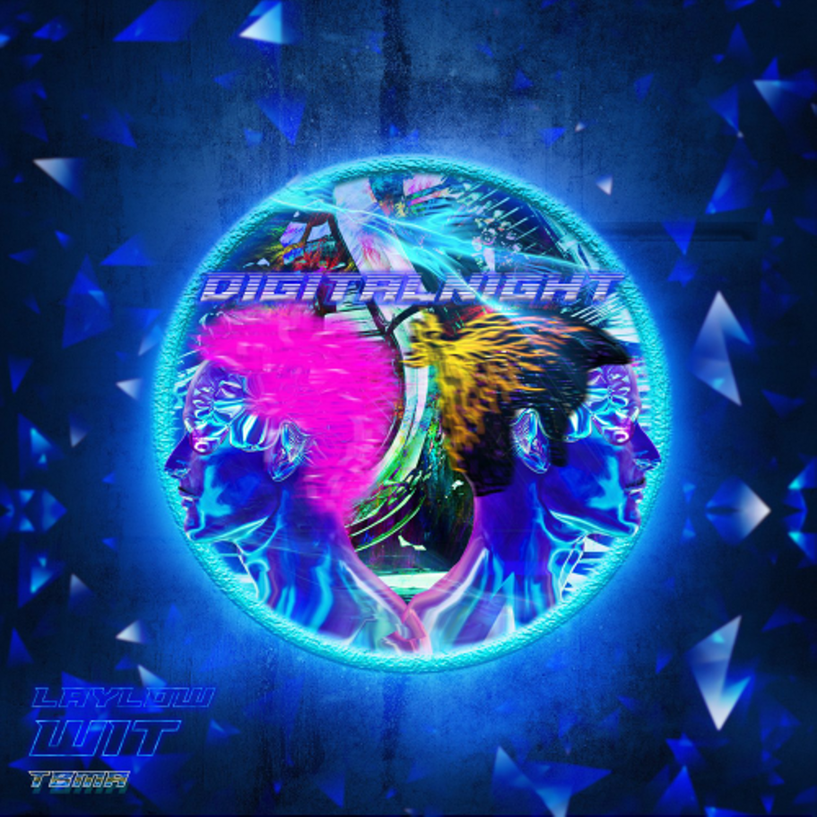
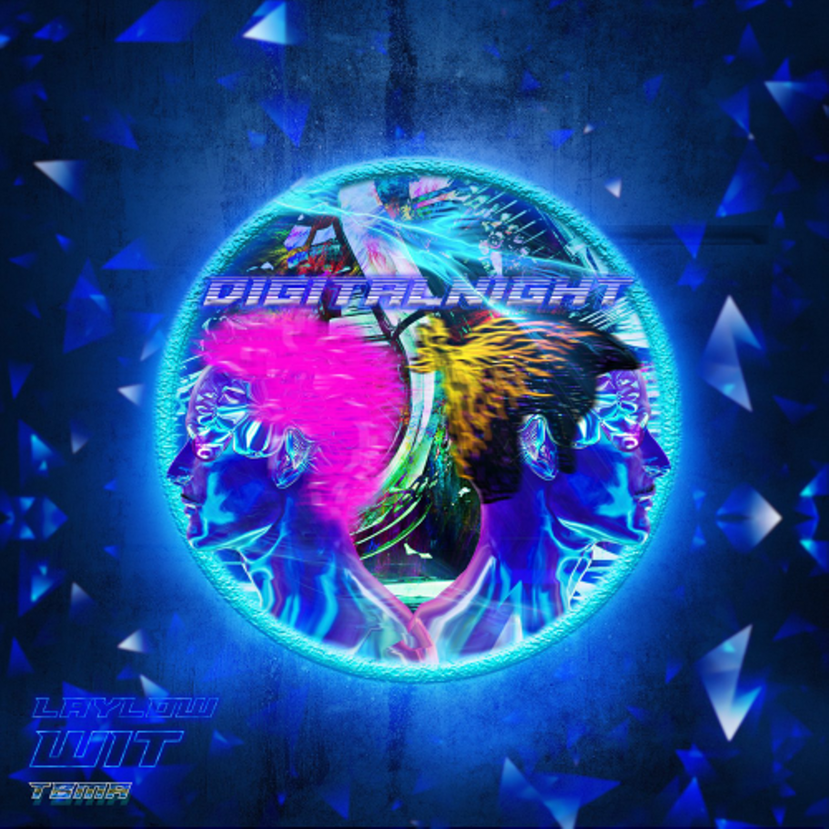

Laylow accusé de plagiat par un rappeur américain
Alors qu’il a fait un retour surprise ce week-end, Laylow a été accusé par Rome Streetz de plagiat concernant la cover du morceau.
Alors qu’il a fait un retour surprise ce week-end, Laylow a été accusé par Rome Streetz de plagiat concernant la cover du morceau.
Ce vendredi 19 janvier est sûrement le plus gros rendez-vous donné par le rap français depuis le début de l’année. On fait le point sur les sorties de la semaine.
Laylow a rejoint SCH sur scène, à Bercy, ce mercredi, pour dévoiler “Dernière ligne droite”, leur collaboration.
 

Il n'y a actuellement aucun évènement à venir.